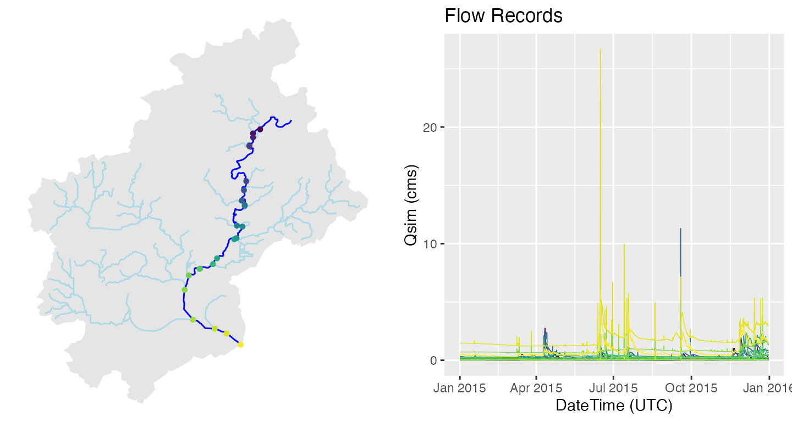
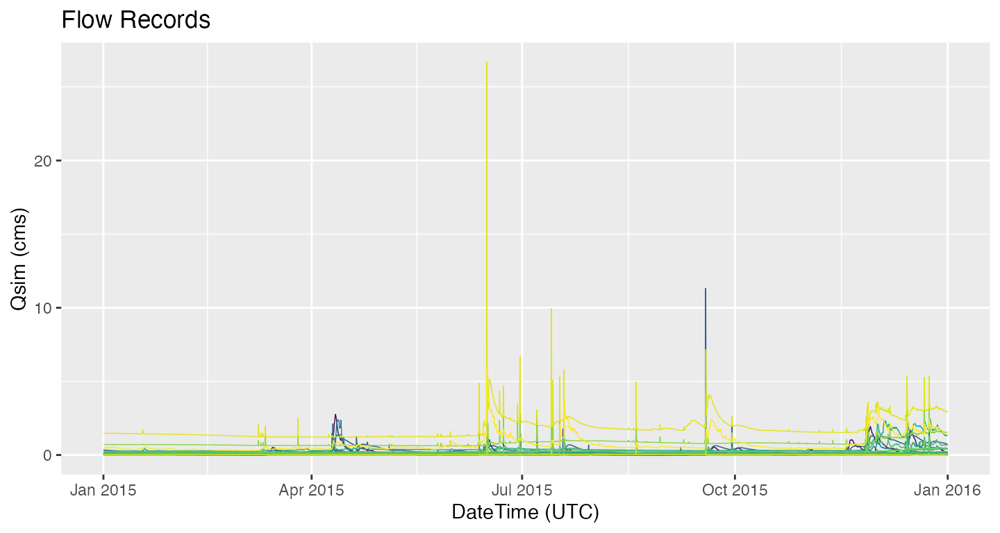

NWM channel output is indexed by NHD COMID, or NWIS site ID. Identifying the relevant IDs is not always easy. Tools exist in dataRetrieval and nhdplusTools to aid in (1) location and (2) area based feature discovery.
Location based search
NHD COMIDs can be determined from point locations as the NHD catchment containing the requested point. Here we find the COMID associated with a specific lat/lon.
library(nwmTools)
library(AOI)
library(dataRetrieval)
library(nhdplusTools)
library(ggplot2)
# Find COMID
(findNLDI(location = c(-119.8276, 34.43583)))
#> Simple feature collection with 1 feature and 4 fields
#> Geometry type: LINESTRING
#> Dimension: XY
#> Bounding box: xmin: -119.8323 ymin: 34.42676 xmax: -119.831 ymax: 34.43619
#> Geodetic CRS: WGS 84
#> # A tibble: 1 × 5
#> sourceName identifier comid name geometry
#> <chr> <chr> <chr> <chr> <LINESTRING [°]>
#> 1 NHDPlus comid 17595383 17595383 "" (-119.8323 34.43619, -119.8317 34.435…Area Search
nhdplusTools::get_nhdplus(...) can accept polygon features as a search domain and will return all NHD flowlines intersecting the input area. From theses, COMIDs can be extracted.
Define Area…
# Fort Collins footprint
(AOI = aoi_get("Fort Collins"))
#> Simple feature collection with 1 feature and 1 field
#> Geometry type: POLYGON
#> Dimension: XY
#> Bounding box: xmin: -105.2268 ymin: 40.39085 xmax: -104.9068 ymax: 40.71085
#> Geodetic CRS: WGS 84
#> geometry request
#> 1 POLYGON ((-105.2268 40.3908... Fort CollinsPull COMIDS for the AOI.
# Find COMIDS
ids = get_nhdplus(AOI)$comid
head(ids)
#> [1] 14934 12892 13744 12796 12660 12680
length(ids)
#> [1] 369Finding NWIS gages and pull siteIDs…
Analogous functionality for finding USGS NWIS site IDs is provided with nhdplusTools::get_nwis. This function only returns NWIS sites that record streamflow (USGS parameter code ‘00060’) and are collocated with an NHD catchment represented in the NWM.
Geometric Discovery
The NHDPlusV2 data model loosely conforms to the HY_Features Conceptual Model with a mapping shared here. nhdplusTools provides the ability to retrieve catchment-divide, flowline, and outlet representations of a hydrologic landscape, for an AOI.
# Return catchments
fc = get_nhdplus(AOI, realization = "all")
str(fc, max.level = 1)
#> List of 3
#> $ catchment: sf [375 × 8] (S3: sf/tbl_df/tbl/data.frame)
#> ..- attr(*, "sf_column")= chr "geometry"
#> ..- attr(*, "agr")= Factor w/ 3 levels "constant","aggregate",..: NA NA NA NA NA NA NA
#> .. ..- attr(*, "names")= chr [1:7] "id" "gridcode" "featureid" "sourcefc" ...
#> $ flowline : sf [369 × 139] (S3: sf/tbl_df/tbl/data.frame)
#> ..- attr(*, "sf_column")= chr "geometry"
#> ..- attr(*, "agr")= Factor w/ 3 levels "constant","aggregate",..: NA NA NA NA NA NA NA NA NA NA ...
#> .. ..- attr(*, "names")= chr [1:138] "id" "comid" "fdate" "resolution" ...
#> $ outlet : sf [369 × 139] (S3: sf/tbl_df/tbl/data.frame)
#> ..- attr(*, "sf_column")= chr "geometry"
#> ..- attr(*, "agr")= Factor w/ 3 levels "constant","aggregate",..: NA NA NA NA NA NA NA NA NA NA ...
#> .. ..- attr(*, "names")= chr [1:138] "id" "comid" "fdate" "resolution" ...
Putting it all together
Lets look at one integrative example. The aim is to identify a self-contained watershed and extract reanalysis records along the mainstem for 2015. The dataRetrival Network Linked Data Index can be used to define a starting point, and traverse the hydrographic network to find the upstream (or downstream) geometries and indexed elements. Once the COMIDs are identified, nwmTools can be used to extract the relevant streamflow forecasts.
loc = findNLDI(nwis = '05428500',
nav = c("UT", "UM"),
find = c("flowline", "basin"))
# Find 2015 Flows along the Mainstem
nldi_flows <- readNWMdata(comid = loc$UM_flowlines$nhdplus_comid,
startDate = "2015-01-01",
endDate = "2015-12-31")